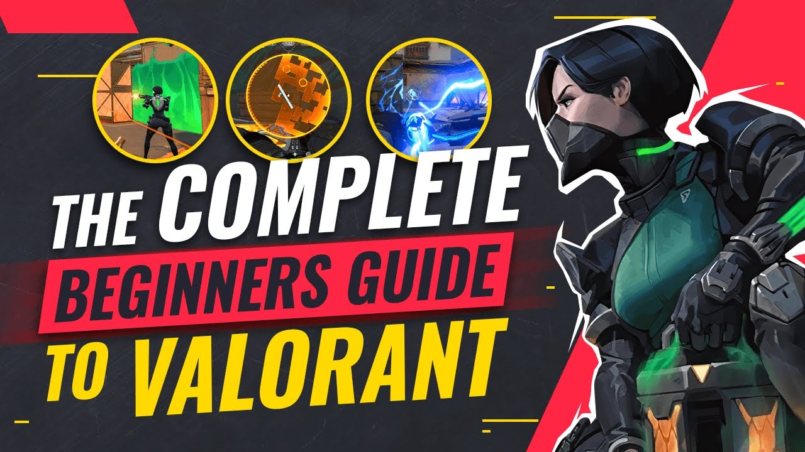
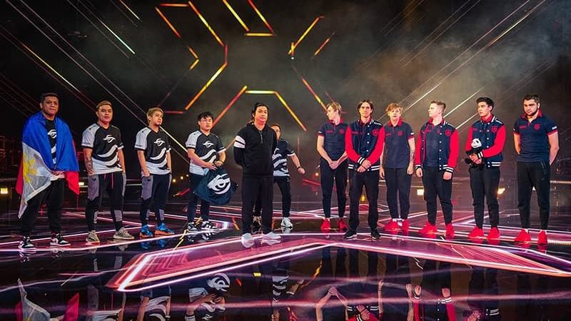
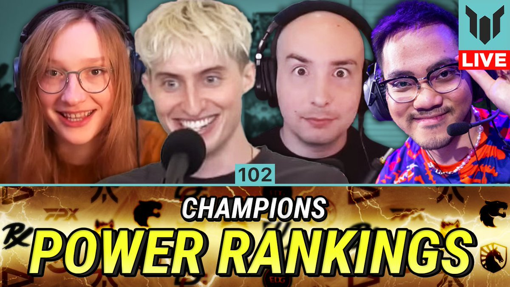
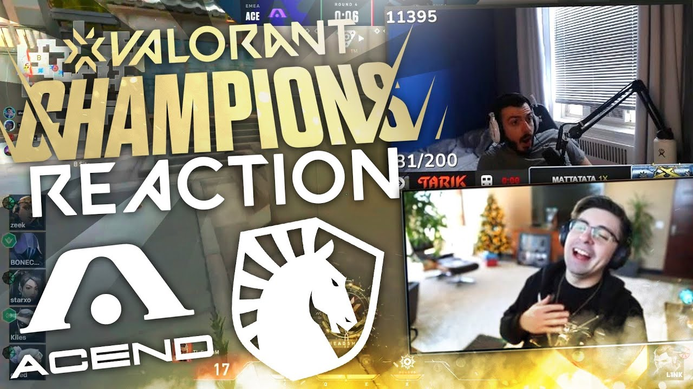

ValoTracker - The (Not So) Official Webtracker for 
Well if you're wondering, I started playing VALORANT around September 2021. I started playing with a group of friends and was immediately invested into the game. I found myself wanting to know to keep learning more and more about it's advanced mechanics. Naturally I started watching videos on YouTube and other social media to try to get better. Through this I learned about VALORANT's comeptitive scene and VCT. I watched highlight videos and montages and found it interesting of how advanced the game can be taken at the highest level.
It was around this time Masters Berlin 2021 had just concluded and fan hype around the VALORANT's competitive circuit was very high. I got recommended video after video of content surrouding the tournament and teams participating and found myself hooked on it. However, it wasn't until Champions 2021 that I was fully invested. I distinctly remember staying up through midnight (time zones are killers) with some friends to watch one of the opening matches between the Filipino representative Team Secret and defending Champion Gambit Esports. Long story short, there would be no miracle upset that night but it was very competitive game which was a blast to watch with people I enjoyed hanging around. From there I watched the rest of tournament (following mostly Team Secret's run) and was fully invested at that point
After that I continued to consume VCT related content to better educate myself as a fan of my newfound hobby. Analysis videos, podcasts, live watch parties, you name it I probably watched something like it. And I still do to this day. With the 2022 season over it marks the end of the pre-franchised era of VALORANT and I'm excited to see where it goes from here
 From Singapore, this team won my heart in their run at Masters Copenhagen. With their high paced aggressive game style, unusual character choices, and whimsical personality. The pride of Southeast Asian VALORANT !
Pinoy Pride ! Need I say more? They've been our country's representative at events within the Asia-Pacific and more. They got me into VALORANT Esports and I've supported them since. I even have a hoodie ! Hope to see them qualify for global event some time soon.
The pride of North American VALORANT. They were always a treat to watch with consistency, innovation, and starpower. Some of my favorite games of all time were played by this team ! Unofrtunately they have since parted ways after not making the franchised league although individual players remain active on separate teams.